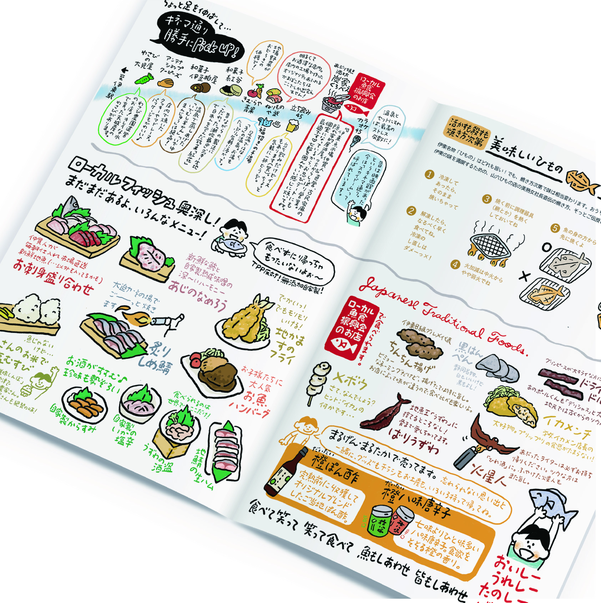
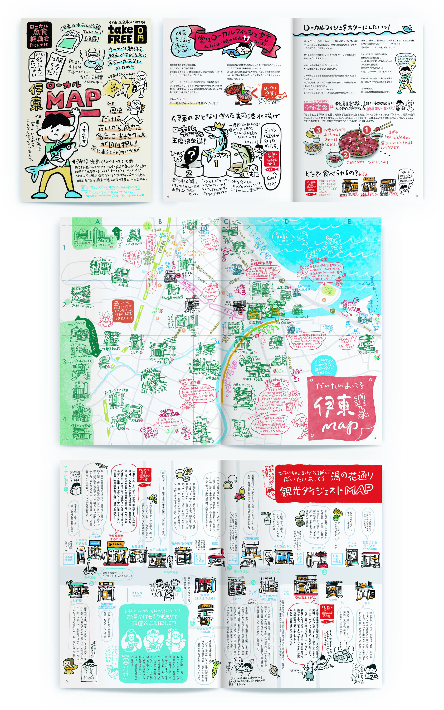

伊東ローカルMAP
株式会社マリンスポーツ・オフィス
リーフレット / イラスト
2016. 02


リーフレット / イラスト
2016. 02
温泉街である伊東の駅前周辺の観光マップとお店の紹介を詰め込んだ冊子。
海鮮居酒屋を営む企業が制作し、店で提供される地元の魚や、具体的なメニューの紹介を掲載。それだけではなく、せっかくなので観光客の方に役立つような情報も掲載したい、商店街一丸となって盛り上げていきたいので他店も紹介したい、とのご依頼のもと、各ページを制作しました。
もともと、社内の事務さんが手作りでつくっていたチラシがあり、そのイメージを踏襲したいとのことから、全体を親近感を感じさせる手書き感の強いイラストや文字で構成し、あまり整え過ぎない様相でまとめました。
＜ BACK
© Moeri Ito